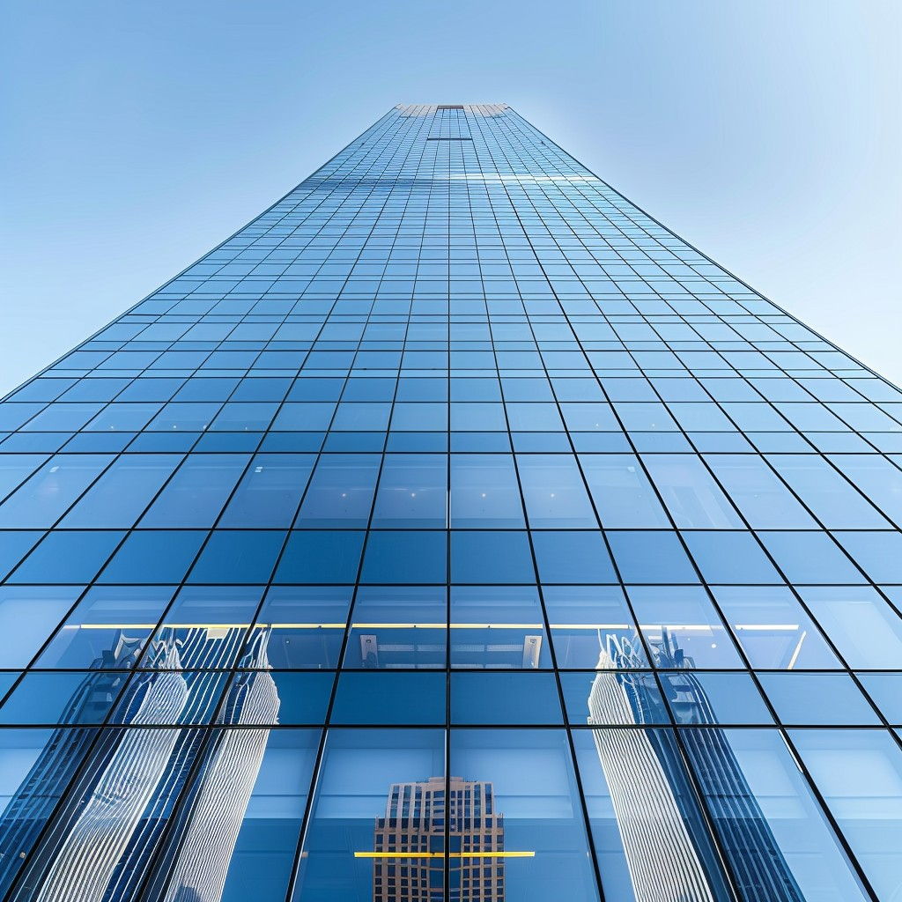
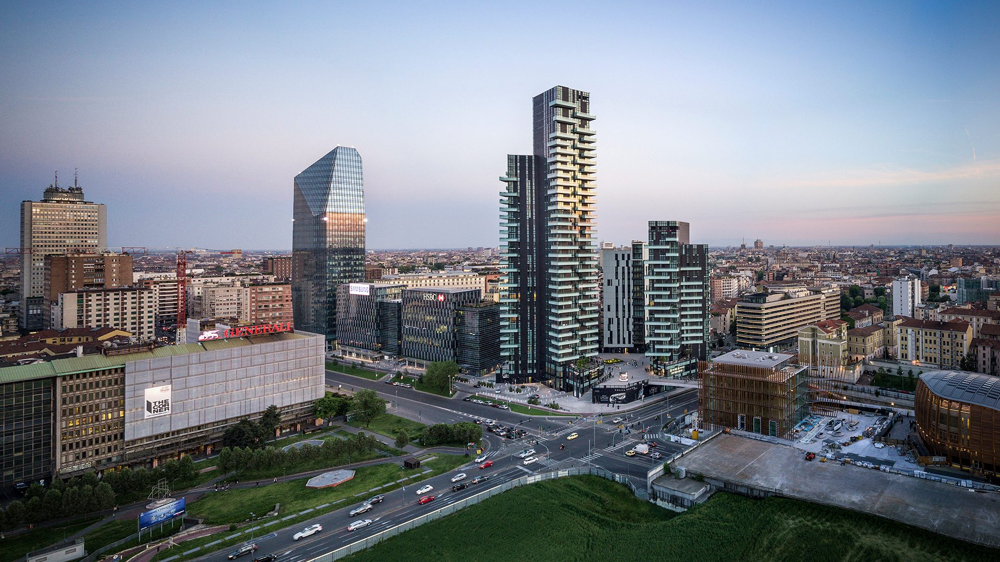

Analyse des contraintes
- Étude des charges structurelles.
- Analyse du vent.
- Analyse climatique.
Conception de bâtiments de grande hauteur intégrant des exigences structurelles, environnementales et urbaines.
Explorer l'expertiseLa conception de bâtiments de grande hauteur nécessite une approche globale intégrant les contraintes structurelles, climatiques, fonctionnelles et urbaines. Chaque tour doit répondre aux exigences techniques tout en devenant un élément fort du paysage de la ville

Arquitectonica développe des bâtiments de grande hauteur dans de nombreuses métropoles internationales. L'agence cherche à créer des tours qui deviennent des repères urbains grâce à une architecture innovante, des façades performantes et une intégration harmonieuse dans leur environnement. Chaque projet possède une identité propre tout en répondant aux exigences techniques liées à la hauteur.
La conception des bâtiments de grande hauteur repose sur des structures capables de reprendre des charges importantes tout en garantissant la stabilité, la sécurité et l'efficacité du pro
Les façades sont conçues pour optimiser l'apport de lumière naturelle, améliorer les performances énergétiques et assurer un confort thermique tout au long de l'année.
Les effets du vent sont étudiés dès les premières phases de conception afin de limiter les vibrations , d'améliorer le confort des occupants et d'assurer la stabilité de la tour
Chaque tour est pensée comme un élément du tissu urbain en créant des liens avec les espaces publics, les mobilités et les bâtiments voisins, tout en intégrant lorsque cela est pertinent des éléments de nature dans son environnement.
Les ascenseurs, escaliers et noyaux de circulation sont organisés afin de faciliter les déplacements des utilisateurs et d'assurer une évacuation efficace en cas d'urgence.

Tour résidentielle emblématique de Milan intégrant logements haut de gamme et architecture contemporaine.
Voir le projet →
Projet participant au renouvellement urbain avec une relation forte entre ville, Seine et transports.
Voir le projet →
Tour résidentielle intégrant logements, crèche et parking dans un contexte urbain dense.
Voir le projet →